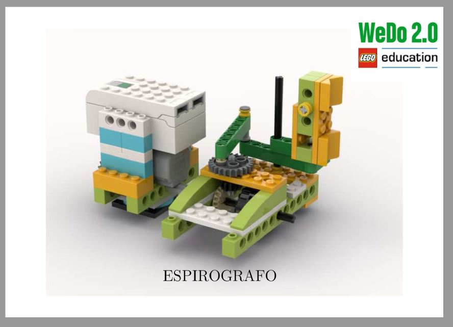
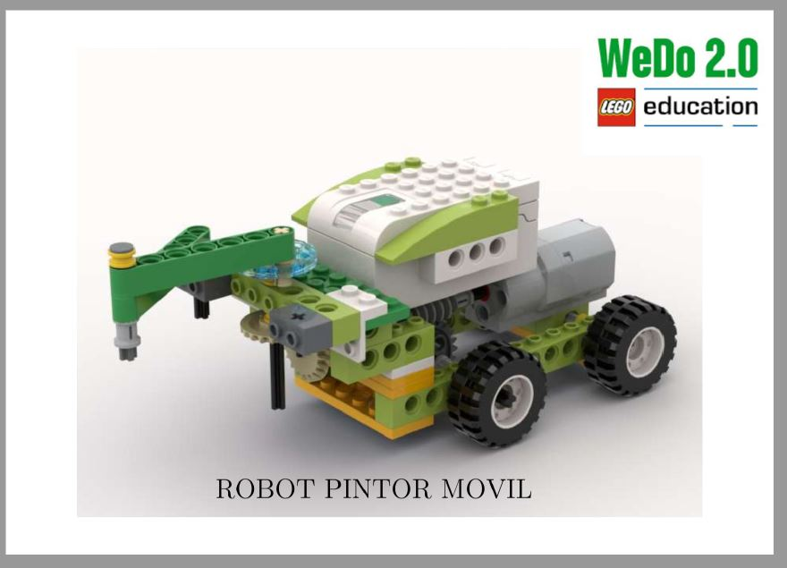

WeDo 2.0 — Avanzados
Manuales avanzados creados por el profe
🚗 El Smart Car 🚗
En este manual, tratarán de construir un auto inteligente. El armado del auto es facil. La idea es será, que el auto no pueda chocarse con obstaculos. Trata de pensar la programación del robót con tus compañeros.

🎨 El espirografo 🎨
En esta actividad, tratarán de armar un robot capaz de trazar epitrocoides, figras geometricas que siguen un patron en específico. La idea es que puedan experimentar por primera vez estas figuras. Se recomienda tener marcadores finos o silvapenes de diferentes colores para que la imagen quede mejor.

🖼️'" />🖌🖼🚗 Robót pintor movil 🖌🖼🚗
Tratemos de llevar el arte a otro nivel. En este manual le daran movimiento al espirografo. Usarán la mecanica de un auto inteligente combinado con el espirografo para darle movimiento a sus pinturas.

🖼️'" />